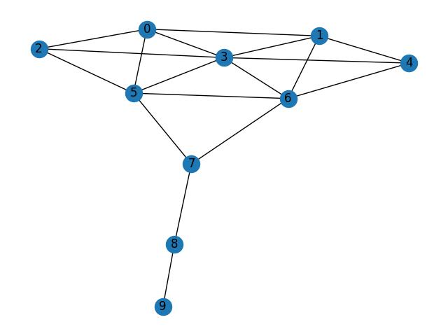
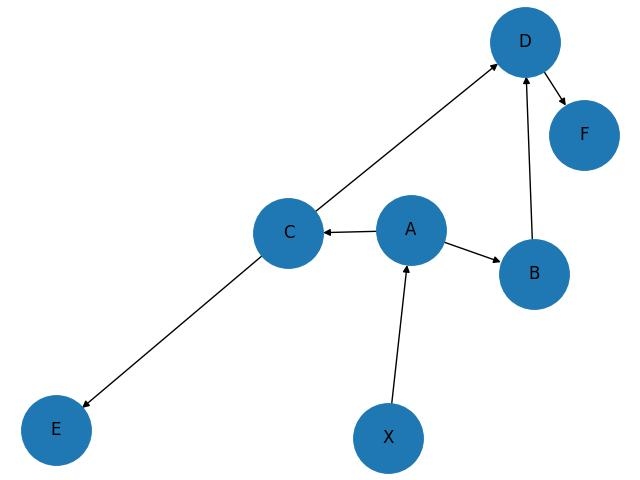

Ağ yapı kavramı sosyal ağ sitelerinin arkadaşlık ağı analizi sayesinde yaygınlaştı, fakat sosyal ağlar diğer alanlarda da kullanılabilir.
Ağ analizi için güzel bir paket NetworkX. Basit bir ağ üzerinde görelim,
import networkx as net
import networkx.generators.small
g = networkx.generators.small.krackhardt_kite_graph()
print (g.number_of_edges())
net.draw(g,with_labels=True)
plt.savefig('net1.jpg')18
Gruplararası Bağlantılar
Sosyal ağ araştırmalarında bir kavram büyük gruplar arasında bağlantı oluşturan insanların önemli olabileceği, çünkü bu kişiler iki ya da daha fazla grup arasındaki iletişimi sağlıyor. Aracı Merkezlik (Betweenness Centrality) ölçütü bu durumu saptamak için bulunmuş. BC ölçümünün algoritmasını [1, sf. 52]’de görebiliriz.
NetworkX ile bu hesap,
print (net.betweenness_centrality(g)){0: 0.023148148148148143, 1: 0.023148148148148143, 2: 0.0, 3:
0.10185185185185183, 4: 0.0, 5: 0.23148148148148148, 6:
0.23148148148148148, 7: 0.38888888888888884, 8: 0.2222222222222222, 9:
0.0}şeklinde yapılabilir.
PageRank
Bu algoritma Google ile ünlendi, ve kavram olarak aslında BC’nin tam tersi. PR için önemli olan “gelen” bağlantılar, ya da düğümleri Web sayfaları bağlantıları Web bağlantıları olarak düşünürsek Web’i rasgele gezen herhangi birinin o sayfaya gelme olasılığı. Tabii bunun için sadece o sayfaya tek geçişle (tıklamayla) gelişi değil, o sayfanın tüm komşularına gelişi, ve onların komşularına da gelişi, vs. şekilde zincirleme şekilde bakabilecek, hesaplayabilecek bir algoritma bu. PR konusunu daha önce işlemiştik [2].
print (net.pagerank(g)){0: 0.1019196696364895, 1: 0.10191966963648949, 2:
0.07941791239513805, 3: 0.14714751310196444, 4: 0.07941791239513805,
5: 0.12890718095072973, 6: 0.12890718095072973, 7:
0.09524765350111203, 8: 0.0856958031065524, 9: 0.05141950432565652}Klikler
Birbiri ile iç bağlantıları çok ama dış bağlantıları az olan gruplara verilen isim. Detaylı tanım için [1, sf. 79].
cliques = list(net.find_cliques(g))
print (cliques)[[8, 9], [8, 7], [3, 0, 1], [3, 0, 2, 5], [3, 4, 1, 6], [3, 6, 5], [7, 5, 6]]Üçlü Gruplar (Triad)
import triadic
census, node_census = triadic.triadic_census(g)
print (census){'003': 22.0, '012': 0, '102': 63, '021D': 0, '021U': 0,
'021C': 0, '111D': 0, '111U': 0, '030T': 0, '030C': 0, '201': 24,
'120D': 0, '120U': 0, '120C': 0, '210': 0, '300': 11}9/11 teröristlerinin ağ yapısı altta. M. Atta kişinin merkezi bir figür olduğu görülüyor.
import csv
import networkx as net
fig, axs = plt.subplots(1, 1, figsize=(10, 8))
in_file=csv.reader(open('9_11_edgelist.txt', newline='\n'), delimiter=',')
g=net.Graph()
for line in in_file:
g.add_edge(line[0],line[1],weight=line[2],conf=line[3])
for n in g.nodes: g._node[n]['flight']='None'
attrb=csv.reader(open('9_11_attrib.txt'))
for line in attrb:
g._node[line[0]]['flight']=line[1]
net.draw_random(g,ax=axs,with_labels=True,font_size=15,width=2,alpha=0.6)
plt.savefig('net2.jpg')
Eğer üçlü grupları hesaplarsak,
import networkx as nx
import triadic
connected_component_nodes = list(nx.connected_components(g))
first_component_nodes = connected_component_nodes[0]
cc = g.subgraph(first_component_nodes).copy()
census, node_census = triadic.triadic_census(cc)
closed_triads = [[-k,v] for k,v in sorted([[-node_census[k]['300'],k] for k in node_census.keys()])]
print("Census for the first connected component:", census)
print("Node census for the first connected component:", node_census)
print("Kapali Uclu Gruplar:", closed_triads)Census for the first connected component: {'003': 31288.0, '012': 0, '102': 7585, '021D': 0, '021U': 0, '021C': 0, '111D': 0, '111U': 0, '030T': 0, '030C': 0, '201': 705, '120D': 0, '120U': 0, '120C': 0, '210': 0, '300': 133}
Node census for the first connected component: {'Hani Hanjour': {'003': 0, '012': 0, '102': 590, '021D': 0, '021U': 0, '021C': 0, '111D': 0, '111U': 0, '030T': 0, '030C': 0, '201': 102, '120D': 0, '120U': 0, '120C': 0, '210': 0, '300': 23}, 'Majed Moqed': {'003': 0, '012': 0, '102': 161, '021D': 0, '021U': 0, '021C': 0, '111D': 0, '111U': 0, '030T': 0, '030C': 0, '201': 13, '120D': 0, '120U': 0, '120C': 0, '210': 0, '300': 3}, 'Nawaf Alhazmi': {'003': 0, '012': 0, '102': 428, '021D': 0, '021U': 0, '021C': 0, '111D': 0, '111U': 0, '030T': 0, '030C': 0, '201': 60, '120D': 0, '120U': 0, '120C': 0, '210': 0, '300': 7}, 'Khalid Al-Mihdhar': {'003': 0, '012': 0, '102': 164, '021D': 0, '021U': 0, '021C': 0, '111D': 0, '111U': 0, '030T': 0, '030C': 0, '201': 6, '120D': 0, '120U': 0, '120C': 0, '210': 0, '300': 1}, 'Lotfi Raissi': {'003': 0, '012': 0, '102': 188, '021D': 0, '021U': 0, '021C': 0, '111D': 0, '111U': 0, '030T': 0, '030C': 0, '201': 42, '120D': 0, '120U': 0, '120C': 0, '210': 0, '300': 3}, 'Bandar Alhazmi': {'003': 0, '012': 0, '102': 58, '021D': 0, '021U': 0, '021C': 0, '111D': 0, '111U': 0, '030T': 0, '030C': 0, '201': 1, '120D': 0, '120U': 0, '120C': 0, '210': 0, '300': 0}, 'Rayed Mohammed Abdullah': {'003': 0, '012': 0, '102': 58, '021D': 0, '021U': 0, '021C': 0, '111D': 0, '111U': 0, '030T': 0, '030C': 0, '201': 0, '120D': 0, '120U': 0, '120C': 0, '210': 0, '300': 0}, 'Salem Alhazmi': {'003': 0, '012': 0, '102': 188, '021D': 0, '021U': 0, '021C': 0, '111D': 0, '111U': 0, '030T': 0, '030C': 0, '201': 29, '120D': 0, '120U': 0, '120C': 0, '210': 0, '300': 3}, 'Hamza Alghamdi': {'003': 0, '012': 0, '102': 304, '021D': 0, '021U': 0, '021C': 0, '111D': 0, '111U': 0, '030T': 0, '030C': 0, '201': 34, '120D': 0, '120U': 0, '120C': 0, '210': 0, '300': 2}, 'Ahmed Alnami': {'003': 0, '012': 0, '102': 56, '021D': 0, '021U': 0, '021C': 0, '111D': 0, '111U': 0, '030T': 0, '030C': 0, '201': 3, '120D': 0, '120U': 0, '120C': 0, '210': 0, '300': 0}, 'Saeed Alghamdi': {'003': 0, '012': 0, '102': 162, '021D': 0, '021U': 0, '021C': 0, '111D': 0, '111U': 0, '030T': 0, '030C': 0, '201': 8, '120D': 0, '120U': 0, '120C': 0, '210': 0, '300': 1}, 'Abdussattar Shaikh': {'003': 0, '012': 0, '102': 59, '021D': 0, '021U': 0, '021C': 0, '111D': 0, '111U': 0, '030T': 0, '030C': 0, '201': 0, '120D': 0, '120U': 0, '120C': 0, '210': 0, '300': 0}, 'Osama Awadallah': {'003': 0, '012': 0, '102': 0, '021D': 0, '021U': 0, '021C': 0, '111D': 0, '111U': 0, '030T': 0, '030C': 0, '201': 0, '120D': 0, '120U': 0, '120C': 0, '210': 0, '300': 0}, 'Mohamed Atta': {'003': 0, '012': 0, '102': 723, '021D': 0, '021U': 0, '021C': 0, '111D': 0, '111U': 0, '030T': 0, '030C': 0, '201': 169, '120D': 0, '120U': 0, '120C': 0, '210': 0, '300': 33}, 'Abdul Aziz Al-Omari': {'003': 0, '012': 0, '102': 301, '021D': 0, '021U': 0, '021C': 0, '111D': 0, '111U': 0, '030T': 0, '030C': 0, '201': 19, '120D': 0, '120U': 0, '120C': 0, '210': 0, '300': 10}, 'Marwan Al-Shehhi': {'003': 0, '012': 0, '102': 519, '021D': 0, '021U': 0, '021C': 0, '111D': 0, '111U': 0, '030T': 0, '030C': 0, '201': 56, '120D': 0, '120U': 0, '120C': 0, '210': 0, '300': 19}, 'Ziad Jarrah': {'003': 0, '012': 0, '102': 251, '021D': 0, '021U': 0, '021C': 0, '111D': 0, '111U': 0, '030T': 0, '030C': 0, '201': 13, '120D': 0, '120U': 0, '120C': 0, '210': 0, '300': 4}, 'Said Bahaji': {'003': 0, '012': 0, '102': 215, '021D': 0, '021U': 0, '021C': 0, '111D': 0, '111U': 0, '030T': 0, '030C': 0, '201': 9, '120D': 0, '120U': 0, '120C': 0, '210': 0, '300': 2}, 'Ramzi Bin al-Shibh': {'003': 0, '012': 0, '102': 304, '021D': 0, '021U': 0, '021C': 0, '111D': 0, '111U': 0, '030T': 0, '030C': 0, '201': 22, '120D': 0, '120U': 0, '120C': 0, '210': 0, '300': 1}, 'Zakariya Essabar': {'003': 0, '012': 0, '102': 0, '021D': 0, '021U': 0, '021C': 0, '111D': 0, '111U': 0, '030T': 0, '030C': 0, '201': 0, '120D': 0, '120U': 0, '120C': 0, '210': 0, '300': 0}, 'Essid Sami Ben Khemais': {'003': 0, '012': 0, '102': 507, '021D': 0, '021U': 0, '021C': 0, '111D': 0, '111U': 0, '030T': 0, '030C': 0, '201': 42, '120D': 0, '120U': 0, '120C': 0, '210': 0, '300': 6}, 'Waleed Alshehri': {'003': 0, '012': 0, '102': 217, '021D': 0, '021U': 0, '021C': 0, '111D': 0, '111U': 0, '030T': 0, '030C': 0, '201': 5, '120D': 0, '120U': 0, '120C': 0, '210': 0, '300': 4}, 'Wail Alshehri': {'003': 0, '012': 0, '102': 108, '021D': 0, '021U': 0, '021C': 0, '111D': 0, '111U': 0, '030T': 0, '030C': 0, '201': 4, '120D': 0, '120U': 0, '120C': 0, '210': 0, '300': 1}, 'Satam Suqami': {'003': 0, '012': 0, '102': 156, '021D': 0, '021U': 0, '021C': 0, '111D': 0, '111U': 0, '030T': 0, '030C': 0, '201': 6, '120D': 0, '120U': 0, '120C': 0, '210': 0, '300': 1}, 'Fayez Ahmed': {'003': 0, '012': 0, '102': 107, '021D': 0, '021U': 0, '021C': 0, '111D': 0, '111U': 0, '030T': 0, '030C': 0, '201': 1, '120D': 0, '120U': 0, '120C': 0, '210': 0, '300': 0}, 'Mohand Alshehri': {'003': 0, '012': 0, '102': 0, '021D': 0, '021U': 0, '021C': 0, '111D': 0, '111U': 0, '030T': 0, '030C': 0, '201': 0, '120D': 0, '120U': 0, '120C': 0, '210': 0, '300': 0}, 'Mustafa Ahmed al-Hisawi': {'003': 0, '012': 0, '102': 0, '021D': 0, '021U': 0, '021C': 0, '111D': 0, '111U': 0, '030T': 0, '030C': 0, '201': 0, '120D': 0, '120U': 0, '120C': 0, '210': 0, '300': 0}, 'Ahmed Alghamdi': {'003': 0, '012': 0, '102': 54, '021D': 0, '021U': 0, '021C': 0, '111D': 0, '111U': 0, '030T': 0, '030C': 0, '201': 1, '120D': 0, '120U': 0, '120C': 0, '210': 0, '300': 0}, 'Ahmed Al Haznawi': {'003': 0, '012': 0, '102': 0, '021D': 0, '021U': 0, '021C': 0, '111D': 0, '111U': 0, '030T': 0, '030C': 0, '201': 0, '120D': 0, '120U': 0, '120C': 0, '210': 0, '300': 0}, 'Zacarias Moussaoui': {'003': 0, '012': 0, '102': 315, '021D': 0, '021U': 0, '021C': 0, '111D': 0, '111U': 0, '030T': 0, '030C': 0, '201': 19, '120D': 0, '120U': 0, '120C': 0, '210': 0, '300': 5}, 'Djamal Beghal': {'003': 0, '012': 0, '102': 375, '021D': 0, '021U': 0, '021C': 0, '111D': 0, '111U': 0, '030T': 0, '030C': 0, '201': 21, '120D': 0, '120U': 0, '120C': 0, '210': 0, '300': 3}, 'Jerome Courtaillier': {'003': 0, '012': 0, '102': 115, '021D': 0, '021U': 0, '021C': 0, '111D': 0, '111U': 0, '030T': 0, '030C': 0, '201': 2, '120D': 0, '120U': 0, '120C': 0, '210': 0, '300': 0}, 'David Courtaillier': {'003': 0, '012': 0, '102': 0, '021D': 0, '021U': 0, '021C': 0, '111D': 0, '111U': 0, '030T': 0, '030C': 0, '201': 0, '120D': 0, '120U': 0, '120C': 0, '210': 0, '300': 0}, 'Ahmed Ressam': {'003': 0, '012': 0, '102': 58, '021D': 0, '021U': 0, '021C': 0, '111D': 0, '111U': 0, '030T': 0, '030C': 0, '201': 1, '120D': 0, '120U': 0, '120C': 0, '210': 0, '300': 0}, 'Kamel Daoudi': {'003': 0, '012': 0, '102': 57, '021D': 0, '021U': 0, '021C': 0, '111D': 0, '111U': 0, '030T': 0, '030C': 0, '201': 1, '120D': 0, '120U': 0, '120C': 0, '210': 0, '300': 0}, 'Tarek Maaroufi': {'003': 0, '012': 0, '102': 273, '021D': 0, '021U': 0, '021C': 0, '111D': 0, '111U': 0, '030T': 0, '030C': 0, '201': 12, '120D': 0, '120U': 0, '120C': 0, '210': 0, '300': 1}, 'Faisal Al Salmi': {'003': 0, '012': 0, '102': 0, '021D': 0, '021U': 0, '021C': 0, '111D': 0, '111U': 0, '030T': 0, '030C': 0, '201': 0, '120D': 0, '120U': 0, '120C': 0, '210': 0, '300': 0}, 'Mohamed Abdi': {'003': 0, '012': 0, '102': 0, '021D': 0, '021U': 0, '021C': 0, '111D': 0, '111U': 0, '030T': 0, '030C': 0, '201': 0, '120D': 0, '120U': 0, '120C': 0, '210': 0, '300': 0}, 'Mamoun Darkazanli': {'003': 0, '012': 0, '102': 58, '021D': 0, '021U': 0, '021C': 0, '111D': 0, '111U': 0, '030T': 0, '030C': 0, '201': 0, '120D': 0, '120U': 0, '120C': 0, '210': 0, '300': 0}, 'Ahmed Khalil Ibrahim Samir Al-Ani': {'003': 0, '012': 0, '102': 0, '021D': 0, '021U': 0, '021C': 0, '111D': 0, '111U': 0, '030T': 0, '030C': 0, '201': 0, '120D': 0, '120U': 0, '120C': 0, '210': 0, '300': 0}, 'Agus Budiman': {'003': 0, '012': 0, '102': 57, '021D': 0, '021U': 0, '021C': 0, '111D': 0, '111U': 0, '030T': 0, '030C': 0, '201': 0, '120D': 0, '120U': 0, '120C': 0, '210': 0, '300': 0}, 'Mounir El Motassadeq ': {'003': 0, '012': 0, '102': 0, '021D': 0, '021U': 0, '021C': 0, '111D': 0, '111U': 0, '030T': 0, '030C': 0, '201': 0, '120D': 0, '120U': 0, '120C': 0, '210': 0, '300': 0}, 'Abdelghani Mzoudi': {'003': 0, '012': 0, '102': 0, '021D': 0, '021U': 0, '021C': 0, '111D': 0, '111U': 0, '030T': 0, '030C': 0, '201': 0, '120D': 0, '120U': 0, '120C': 0, '210': 0, '300': 0}, 'Imad Eddin Barakat Yarkas': {'003': 0, '012': 0, '102': 55, '021D': 0, '021U': 0, '021C': 0, '111D': 0, '111U': 0, '030T': 0, '030C': 0, '201': 1, '120D': 0, '120U': 0, '120C': 0, '210': 0, '300': 0}, 'Nabil al-Marabh': {'003': 0, '012': 0, '102': 57, '021D': 0, '021U': 0, '021C': 0, '111D': 0, '111U': 0, '030T': 0, '030C': 0, '201': 1, '120D': 0, '120U': 0, '120C': 0, '210': 0, '300': 0}, 'Raed Hijazi': {'003': 0, '012': 0, '102': 58, '021D': 0, '021U': 0, '021C': 0, '111D': 0, '111U': 0, '030T': 0, '030C': 0, '201': 0, '120D': 0, '120U': 0, '120C': 0, '210': 0, '300': 0}, 'Abu Qatada': {'003': 0, '012': 0, '102': 56, '021D': 0, '021U': 0, '021C': 0, '111D': 0, '111U': 0, '030T': 0, '030C': 0, '201': 0, '120D': 0, '120U': 0, '120C': 0, '210': 0, '300': 0}, 'Mamduh Mahmud Salim': {'003': 0, '012': 0, '102': 0, '021D': 0, '021U': 0, '021C': 0, '111D': 0, '111U': 0, '030T': 0, '030C': 0, '201': 0, '120D': 0, '120U': 0, '120C': 0, '210': 0, '300': 0}, 'Mohammed Belfas': {'003': 0, '012': 0, '102': 0, '021D': 0, '021U': 0, '021C': 0, '111D': 0, '111U': 0, '030T': 0, '030C': 0, '201': 0, '120D': 0, '120U': 0, '120C': 0, '210': 0, '300': 0}, 'Abu Walid': {'003': 0, '012': 0, '102': 0, '021D': 0, '021U': 0, '021C': 0, '111D': 0, '111U': 0, '030T': 0, '030C': 0, '201': 0, '120D': 0, '120U': 0, '120C': 0, '210': 0, '300': 0}, 'Nabil Almarabh': {'003': 0, '012': 0, '102': 0, '021D': 0, '021U': 0, '021C': 0, '111D': 0, '111U': 0, '030T': 0, '030C': 0, '201': 0, '120D': 0, '120U': 0, '120C': 0, '210': 0, '300': 0}, 'Haydar Abu Doha': {'003': 0, '012': 0, '102': 58, '021D': 0, '021U': 0, '021C': 0, '111D': 0, '111U': 0, '030T': 0, '030C': 0, '201': 1, '120D': 0, '120U': 0, '120C': 0, '210': 0, '300': 0}, 'Mohamed Bensakhria': {'003': 0, '012': 0, '102': 115, '021D': 0, '021U': 0, '021C': 0, '111D': 0, '111U': 0, '030T': 0, '030C': 0, '201': 1, '120D': 0, '120U': 0, '120C': 0, '210': 0, '300': 0}, 'Lased Ben Heni': {'003': 0, '012': 0, '102': 0, '021D': 0, '021U': 0, '021C': 0, '111D': 0, '111U': 0, '030T': 0, '030C': 0, '201': 0, '120D': 0, '120U': 0, '120C': 0, '210': 0, '300': 0}, 'Mehdi Khammoun': {'003': 0, '012': 0, '102': 0, '021D': 0, '021U': 0, '021C': 0, '111D': 0, '111U': 0, '030T': 0, '030C': 0, '201': 0, '120D': 0, '120U': 0, '120C': 0, '210': 0, '300': 0}, 'Essoussi Laaroussi': {'003': 0, '012': 0, '102': 0, '021D': 0, '021U': 0, '021C': 0, '111D': 0, '111U': 0, '030T': 0, '030C': 0, '201': 0, '120D': 0, '120U': 0, '120C': 0, '210': 0, '300': 0}, 'Samir Kishk': {'003': 0, '012': 0, '102': 0, '021D': 0, '021U': 0, '021C': 0, '111D': 0, '111U': 0, '030T': 0, '030C': 0, '201': 0, '120D': 0, '120U': 0, '120C': 0, '210': 0, '300': 0}, 'Fahid al Shakri': {'003': 0, '012': 0, '102': 0, '021D': 0, '021U': 0, '021C': 0, '111D': 0, '111U': 0, '030T': 0, '030C': 0, '201': 0, '120D': 0, '120U': 0, '120C': 0, '210': 0, '300': 0}, 'Seifallah ben Hassine': {'003': 0, '012': 0, '102': 0, '021D': 0, '021U': 0, '021C': 0, '111D': 0, '111U': 0, '030T': 0, '030C': 0, '201': 0, '120D': 0, '120U': 0, '120C': 0, '210': 0, '300': 0}, 'Nizar Trabelsi': {'003': 0, '012': 0, '102': 0, '021D': 0, '021U': 0, '021C': 0, '111D': 0, '111U': 0, '030T': 0, '030C': 0, '201': 0, '120D': 0, '120U': 0, '120C': 0, '210': 0, '300': 0}, 'Jean-Marc Grandvisir': {'003': 0, '012': 0, '102': 0, '021D': 0, '021U': 0, '021C': 0, '111D': 0, '111U': 0, '030T': 0, '030C': 0, '201': 0, '120D': 0, '120U': 0, '120C': 0, '210': 0, '300': 0}, 'Abu Zubeida': {'003': 0, '012': 0, '102': 0, '021D': 0, '021U': 0, '021C': 0, '111D': 0, '111U': 0, '030T': 0, '030C': 0, '201': 0, '120D': 0, '120U': 0, '120C': 0, '210': 0, '300': 0}, 'Madjid Sahoune': {'003': 0, '012': 0, '102': 0, '021D': 0, '021U': 0, '021C': 0, '111D': 0, '111U': 0, '030T': 0, '030C': 0, '201': 0, '120D': 0, '120U': 0, '120C': 0, '210': 0, '300': 0}}
Kapali Uclu Gruplar: [[33, 'Mohamed Atta'], [23, 'Hani Hanjour'], [19, 'Marwan Al-Shehhi'], [10, 'Abdul Aziz Al-Omari'], [7, 'Nawaf Alhazmi'], [6, 'Essid Sami Ben Khemais'], [5, 'Zacarias Moussaoui'], [4, 'Waleed Alshehri'], [4, 'Ziad Jarrah'], [3, 'Djamal Beghal'], [3, 'Lotfi Raissi'], [3, 'Majed Moqed'], [3, 'Salem Alhazmi'], [2, 'Hamza Alghamdi'], [2, 'Said Bahaji'], [1, 'Khalid Al-Mihdhar'], [1, 'Ramzi Bin al-Shibh'], [1, 'Saeed Alghamdi'], [1, 'Satam Suqami'], [1, 'Tarek Maaroufi'], [1, 'Wail Alshehri'], [0, 'Abdelghani Mzoudi'], [0, 'Abdussattar Shaikh'], [0, 'Abu Qatada'], [0, 'Abu Walid'], [0, 'Abu Zubeida'], [0, 'Agus Budiman'], [0, 'Ahmed Al Haznawi'], [0, 'Ahmed Alghamdi'], [0, 'Ahmed Alnami'], [0, 'Ahmed Khalil Ibrahim Samir Al-Ani'], [0, 'Ahmed Ressam'], [0, 'Bandar Alhazmi'], [0, 'David Courtaillier'], [0, 'Essoussi Laaroussi'], [0, 'Fahid al Shakri'], [0, 'Faisal Al Salmi'], [0, 'Fayez Ahmed'], [0, 'Haydar Abu Doha'], [0, 'Imad Eddin Barakat Yarkas'], [0, 'Jean-Marc Grandvisir'], [0, 'Jerome Courtaillier'], [0, 'Kamel Daoudi'], [0, 'Lased Ben Heni'], [0, 'Madjid Sahoune'], [0, 'Mamduh Mahmud Salim'], [0, 'Mamoun Darkazanli'], [0, 'Mehdi Khammoun'], [0, 'Mohamed Abdi'], [0, 'Mohamed Bensakhria'], [0, 'Mohammed Belfas'], [0, 'Mohand Alshehri'], [0, 'Mounir El Motassadeq '], [0, 'Mustafa Ahmed al-Hisawi'], [0, 'Nabil Almarabh'], [0, 'Nabil al-Marabh'], [0, 'Nizar Trabelsi'], [0, 'Osama Awadallah'], [0, 'Raed Hijazi'], [0, 'Rayed Mohammed Abdullah'], [0, 'Samir Kishk'], [0, 'Seifallah ben Hassine'], [0, 'Zakariya Essabar']]CheiRank
PageRank bir çizit yapısındaki art arda etki eden (cascading) geliş
bağlantı kuvvetini hesaplayabilir. Fakat bazen, eğer tek yönlü bir çizit
kenarını etki etme bağlamında ele alırsak, en etkili olan bir anlamda
“çıkış noktası” düğümü, düğümleri bulmak isteyebiliriz. Mesela A düğümü
B’ye işaret ediyor (onu etkiliyor), o da C’ye işaret ediyor, bu durumda
A düğümü daha etkilidir, çünkü zincirin başında A vardır, halbuki tek
adımlık çıkışları sayıyor olsak (out_değree ile) A ve B
seviyesi aynı olmalıydı.
Yön değişimine gelince, PageRank gelişleri hesaplar, CheiRank denen kavram gidişleri. Bu iki kavram birbirinin zıttıdır, bu sebeple CR için çiziti tersine çevirip onun üzerinde PR hesaplayabiliriz.
Alttaki örnek çizit üzerinde görelim,
import networkx as nx
G = nx.DiGraph()
G.add_edges_from([
('A', 'B'),
('A', 'C'),
('B', 'D'),
('C', 'D'),
('C', 'E'),
('D', 'F'),
('X', 'A')
])
nodelist = sorted(G.nodes())
adj_matrix = nx.to_numpy_array(G, nodelist=nodelist)
print("Adjacency Matrix:")
print(adj_matrix,'\n')
print("Original Graph Nodes:", G.nodes(), '\n')
print("Original Graph Edges:", G.edges(), '\n')
nx.draw(G,with_labels=True,node_size=2500)
plt.savefig('net3.jpg')Adjacency Matrix:
[[0. 1. 1. 0. 0. 0. 0.]
[0. 0. 0. 1. 0. 0. 0.]
[0. 0. 0. 1. 1. 0. 0.]
[0. 0. 0. 0. 0. 1. 0.]
[0. 0. 0. 0. 0. 0. 0.]
[0. 0. 0. 0. 0. 0. 0.]
[1. 0. 0. 0. 0. 0. 0.]]
Original Graph Nodes: ['A', 'B', 'C', 'D', 'E', 'F', 'X']
Original Graph Edges: [('A', 'B'), ('A', 'C'), ('B', 'D'), ('C', 'D'), ('C', 'E'), ('D', 'F'), ('X', 'A')]

Tersine cevirip PR hesaplayalim,
G_reversed = G.reverse()
print("Ters çevrilmiş çizit dügümleri:", G_reversed.nodes())
print("Ters çevrilmiş çizit kenarları:", G_reversed.edges())
pagerank_reversed = nx.pagerank(G_reversed)
print("Çıkış derecesi (out-degrees):")
for node in sorted(G.nodes()):
print(f"Node {node}: {G.out_degree(node)}")
pagerank_reversed = nx.pagerank(G_reversed)
print("CheiRank:")
for node, pr in sorted(pagerank_reversed.items()):
print(f"Node {node}: {pr:.4f}")Ters çevrilmiş çizit dügümleri: ['A', 'B', 'C', 'D', 'E', 'F', 'X']
Ters çevrilmiş çizit kenarları: [('A', 'X'), ('B', 'A'), ('C', 'A'), ('D', 'B'), ('D', 'C'), ('E', 'C'), ('F', 'D')]
Çıkış derecesi (out-degrees):
Node A: 2
Node B: 1
Node C: 2
Node D: 1
Node E: 0
Node F: 0
Node X: 1
CheiRank:
Node A: 0.2633
Node B: 0.0988
Node C: 0.1458
Node D: 0.1023
Node E: 0.0553
Node F: 0.0553
Node X: 0.2791Görüldüğü gibi X’in çıkış derecesi A’dan az olmasına rağmen X’in CheiRank değeri A’dan yüksek çıktı.
Kaynaklar
[1] Kouznetsov, Social Network Analysis for Startups
[2] Bayramli, Lineer Cebir, Google İşleyişi, Ekonomi Teknikleri, Özdeğer, Özvektörler